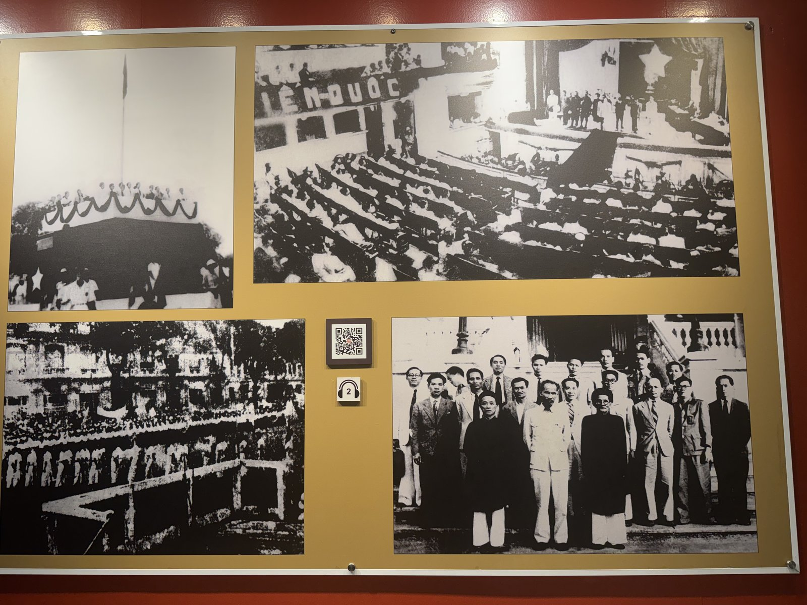

Chứng tích & Liên hệ Quốc tế
Lồng ghép tư liệu Bảo tàng Chứng tích Chiến tranh (28 Võ Văn Tần, Q.3, TP.HCM)
Khu trưng bày "Chế độ lao tù thực dân" & Mô hình "Chuồng Cọp" Côn Đảo:
Nhà tù Côn Đảo được thực dân Pháp thành lập từ ngày 1/2/1862 theo quyết định của Thống đốc Bonard để đày ải những người Việt Nam yêu nước chống Pháp.
Tại Bảo tàng Chứng tích Chiến tranh, mô hình chuồng cọp Côn Đảo được phục dựng chân thực: mỗi buồng giam chỉ rộng khoảng 1,45m x 2,7m nhưng giam giữ từ 4 đến 6 người;
phía trên là giàn song sắt kiên cố nơi cai ngục đi lại dùng gậy đầu bịt sắt thọc xuống hoặc rắc vôi bột cay nồng thiêu đốt thân thể tù nhân mỗi khi họ cất tiếng đấu tranh.
Nền đá xi măng ẩm mốc, hệ thống cùm chân bằng sắt hoen gỉ qua hàng chục năm là bằng chứng đanh thép tố cáo bản chất tàn bạo của chế độ thuộc địa,
đồng thời làm sáng ngời tinh thần kiên cường, giữ vững khí tiết của các chiến sĩ cộng sản tiền bối.


Máy chém thời Pháp & Khí tiết kiên trung của các nhà lãnh đạo tiền bối:
Bảo tàng lưu giữ chiếc máy chém nguyên bản do thực dân Pháp nhập khẩu từ Pháp sang Việt Nam từ đầu thế kỷ XX (lưỡi dao nặng 50kg, thả rơi từ độ cao 4 mét dọc khung gỗ chắc chắn).
Hiện vật máy chém cùng hình ảnh các buồng giam biệt lập tại Hỏa Lò (Hà Nội), Khám Lớn Sài Gòn, ngục Kon Tum, nhà đày Buôn Ma Thuột tái hiện giai đoạn khủng bố trắng đẫm máu (1931–1935 và 1940–1942).
Tại đây, người xem xúc động trước di ảnh và câu chuyện bất khuất của:
Tổng Bí thư Trần Phú (bị tra tấn đến kiệt sức tại Khám Lớn, trút hơi thở cuối cùng tại Nhà thương Chợ Quán 6/9/1931 với lời căn dặn đồng chí: "Hãy giữ vững chí khí chiến đấu!");
Đồng chí Lý Tự Trọng (người đoàn viên thanh niên 17 tuổi hiên ngang bước lên máy chém tại Khám Lớn Sài Gòn ngày 21/11/1931);
Tổng Bí thư Hà Huy Tập và Ủy viên Trung ương Nguyễn Thị Minh Khai bị xử bắn tại Ngã tư Giếng nước (Hóc Môn) sau Khởi nghĩa Nam Kỳ (28/8/1941);
Tổng Bí thư Lê Hồng Phong bị đày đọa đến hy sinh tại Côn Đảo (1942).


Tư liệu Khởi nghĩa Nam Kỳ (11/1940) & Thắng lợi Cách mạng Tháng Tám 1945:
Hình ảnh tài liệu về cuộc Khởi nghĩa Nam Kỳ bùng nổ đêm 22 rạng sáng 23/11/1940 tại hơn 20 tỉnh thành Nam Bộ.
Đây là dấu mốc lịch sử khi lá cờ đỏ sao vàng năm cánh do đồng chí Nguyễn Hữu Tiến thiết kế lần đầu tiên xuất hiện tung bay hiên ngang tại đình Long Hưng (Châu Thành, Tiền Giang) và các căn cứ cách mạng Hóc Môn, Gia Định.
Đặc biệt, bảo tàng trưng bày cụm ảnh tư liệu Chủ tịch Hồ Chí Minh đọc Tuyên ngôn Độc lập ngày 2/9/1945 tại Quảng trường Ba Đình và Quốc hội Khóa I (1946) — thành quả vĩ đại kết tinh từ 15 năm đấu tranh gian khổ của toàn Đảng, toàn dân ta.

Góc nhìn & Liên hệ Quốc tế sâu sắc
Cách mạng Tháng Mười Nga (1917) & Luận cương Lênin (1920):
Cách mạng Tháng Mười Nga thắng lợi mở ra thời đại mới trong lịch sử loài người — thời đại quá độ từ chủ nghĩa tư bản lên chủ nghĩa xã hội trên phạm vi toàn cầu.
Tháng 3/1919, Quốc tế Cộng sản (Quốc tế III) thành lập tại Mát-xcơ-va dưới sự lãnh đạo của V.I. Lênin.
Bản Sơ thảo Luận cương về vấn đề dân tộc và thuộc địa của Lênin đã chỉ rõ mối liên minh chiến lược sống còn giữa phong trào vô sản chính quốc và phong trào giải phóng dân tộc thuộc địa: "Vô sản tất cả các nước và các dân tộc bị áp bức, đoàn kết lại!".
Đây chính là kim chỉ nam lý luận dẫn đường đưa Nguyễn Ái Quốc từ người yêu nước trở thành người chiến sĩ cộng sản lỗi lạc.
Nguyễn Ái Quốc — Người đồng sáng lập Đảng Cộng sản Pháp (12/1920):
Tại Đại hội lần thứ XVIII của Đảng Xã hội Pháp họp ở thành phố Tours (tháng 12/1920), Nguyễn Ái Quốc dứt khoát bỏ phiếu tán thành gia nhập Quốc tế III và tham gia sáng lập Đảng Cộng sản Pháp.
Sự kiện này đánh dấu bước chuyển biện chứng quan trọng: kết hợp chủ nghĩa yêu nước chân chính với chủ nghĩa quốc tế vô sản trong sáng.
Từ đây, cách mạng Việt Nam không còn đơn độc mà trở thành một bộ phận khăng khít của phong trào cách mạng thế giới, được sự ủng hộ mạnh mẽ của Đảng Cộng sản Pháp và giai cấp công nhân quốc tế.
Nghị quyết Đại hội VII Quốc tế Cộng sản (7/1935) & Mặt trận Nhân dân Pháp (1936):
Trước hiểm họa phát xít đe dọa hòa bình thế giới, Đại hội VII Quốc tế Cộng sản họp tại Mát-xcơ-va dưới sự chủ trì của Georgi Dimitrov đã định ra sách lược mới:
tập trung mũi nhọn chống phát xít, thành lập Mặt trận nhân dân rộng rãi đòi tự do, hòa bình, dân chủ.
Tại Pháp, Mặt trận Nhân dân do Đảng Cộng sản Pháp làm nòng cốt giành thắng lợi vang dội trong cuộc tổng tuyển cử tháng 5/1936 và lên nắm quyền, thi hành một số chính sách tiến bộ ở thuộc địa (thả tù chính trị, nới lỏng tự do báo chí).
Nắm bắt chuẩn xác thời cơ quốc tế, Đảng Cộng sản Đông Dương đã linh hoạt chuyển hướng chỉ đạo, mở ra cao trào đấu tranh dân chủ 1936–1939 rầm rộ chưa từng có trong lịch sử.